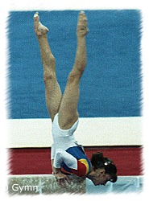

Cristina Bontas (ROM)
1991 FX World Champion
|

Medal Total
- Olympic Games: 2 Silver, 1
Bronze
- World Championships: 1
Gold, 2 Silver, 3 Bronze
- World Cup: 1 Bronze
- European Championships: 1
Silver, 2 Bronze
|
Cristina was born on December
15, 1973, in Bacau. She was coached by Octavian Belu at the CSS Cetate
Deva club. Bontas is married and and has two children. She and her husband work as gymnastics coaches in Canada.
Competition Results
- 1984
- Jr. ROM-BUL-USSR Meet: 1st Team, 4th AA
- Jr. Onesti-Halle (GDR) Dual Meet: 1st Team, 1st AA
- Romanian Cup: 3rd B (Cat. IV)
- 1985
- Jr. Romanian Championships: 4th AA, 1st FX, 3rd UB (Cat. III)
- 1986
Cottbus International: 6th AA, 1st B
Jr. Romanian Championships: 1st AA, 1st V, 1st UB, 1st FX, 3rd B (Cat. Master)
Romanian Sports Schools Championships: 1st AA (Cat. II)
1987
- Blume Memorial: 5th AA
- Intl. Junior Championships: 2nd AA, 1st V, 1st FX, 2nd
UB
Jr. Friendship Tournament (Druzhba): 1st Team, 3rd AA, 1st B, 3rd V,
3rd FX
- Kosice International: 1st AA, 1st B, 2nd UB, 4th V,
5th FX
-
- 1988
- Balkan Championships: 1st Team, 1st AA
Catania Cup: 3rd AA, 1st UB, 2nd V, 2nd FX
- Champions All: 1st AA
- Jr. European Championships: 3rd AA, 7th FX
- Jr. Friendship Tournament (Druzhba): 2nd
Team, 4th AA, 1st FX,
3rd V, 3rd B, 8th UB
-
- 1989
- Chunichi Cup: 3rd AA
CSSR-ROM Dual Meet: 1st Team, 1st AA
- European Championships: 9th AA, 3rd V, 3rd FX
French International: 3rd AA, 4th UB, 4th FX, 5th V
- International Championships of Romania: 2nd AA
- ROM-CSSR Dual Meet: 1st Team, 1st AA
- Rome Grand Prix: 1st AA
- Tokyo Cup: 2nd V, 7th FX
- Trofeul Semenic: 1st AA
- World Championships: 2nd Team, 4th
AA, 2nd V, 3rd FX
-
- 1990
- Blume Memorial: 11th AA
- DTB Cup: 4th AA, 2nd FX, 3rd V, 3rd B
- European Championships: 7th AA, 2nd V,
7th UB, 7th FX
French International: 19th AA
- GBR-ROM Dual Meet: 1st Team, 3rd AA
- HUN-ROM Dual Meet: 1st Team, 3rd AA
- International Championships of Romania: 2nd AA
ROM Championships: 1st AA, 1st B, 2nd V, 2nd FX
- ROM-TCH Dual Meet: 1st Team, 2nd AA
- World Cup: 6th AA, 3rd B, 7th V, 7th
UB, 7th FX
-
- 1991
- BEL-FRA-ROM-URS Meet: 1st AA
- Chunichi Cup: 3rd AA, 2nd B, 2nd FX
- DTB Cup: 4th AA, 1st FX, 2nd V, 3rd UB
- Dutch Open: 4th AA, 1st V, 1st B, 1st FX
ROM Championships: 1st B, 1st FX
- ROM-GER Dual Meet: 1st Team, 1st AA
ROM-ITA Dual Meet: 1st Team, 2nd AA
- Tokyo Cup: 2nd B, 2nd FX
- USA-ROM Dual Meet: 7th AA
- World Championships: 3rd Team, 3rd AA,
1st FX, 4th V, 7th UB, 8th B
-
- 1992
- Chunichi Cup: 2nd AA, 1st FX, 2nd V, 6th
UB
FRA-ROM Dual Meet: 1st Team, 3rd AA
HUN-ROM Dual Meet: 1st Team, 3rd AA
- Olympic Games: 2nd Team, 4th AA, 4th
B, 3rd FX
ROM Championships: 2nd AA, 1st FX, 2nd B, 3rd UB
- ROM-GER Dual Meet: 1st Team, 1st AA
- Tokyo Cup: 1st V, 2nd B, 3rd UB
This page was last updated on September 04, 2022.
© Gymn Forum